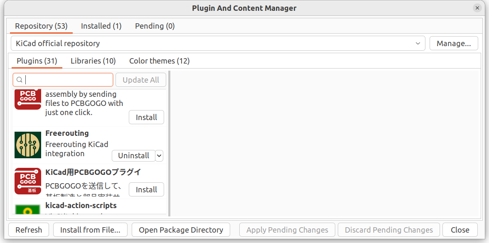

|
Autorouter |
|
|
Autorouter |
freerouting is a Java application.
freerouting requires java version > 16
To verify that you are running the correct version, run
You can find out whether you have multiple Java versions installed on your system by running
If you have multiple Java versions installed on your system, you can set the default Java version by running
In the KiCAD main window,
go to Tools -> Plugin and Content Manager.

Note: Adding teardrops to the tracks seems to crash freerouting.
downloading the zip file from the installer link
https://github.com/freerouting/freerouting/releases
works
go to bin and run freerouting